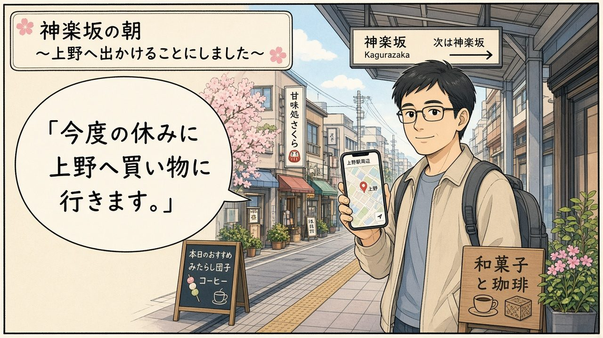
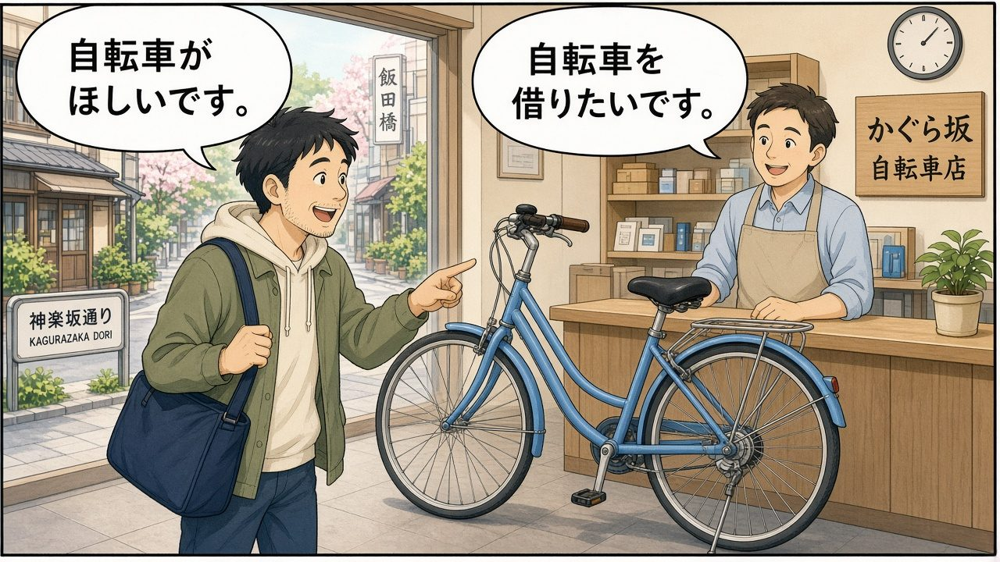
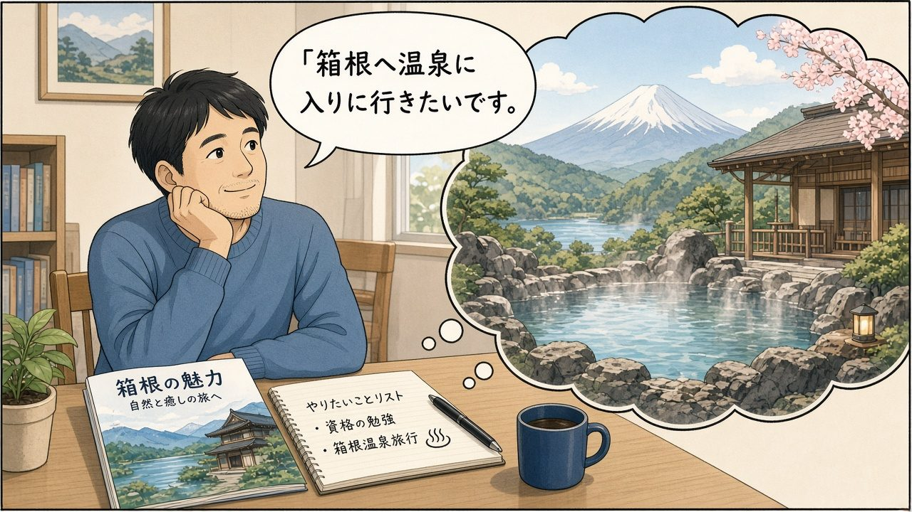
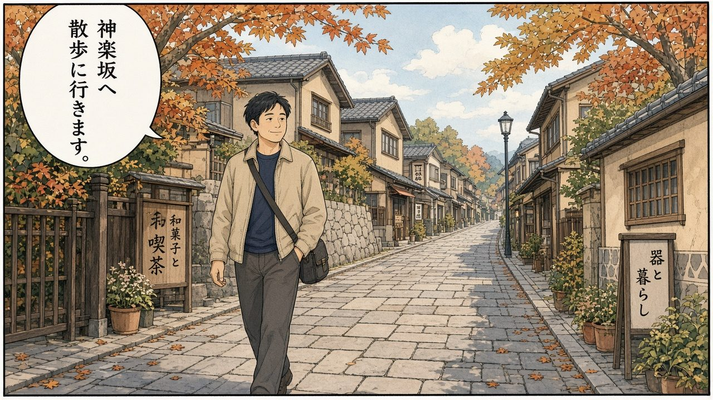
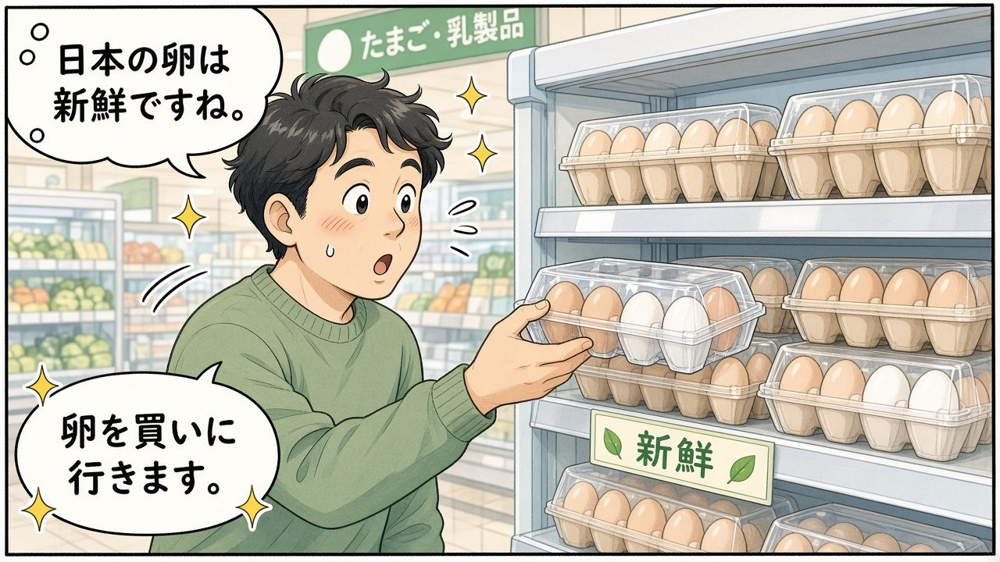
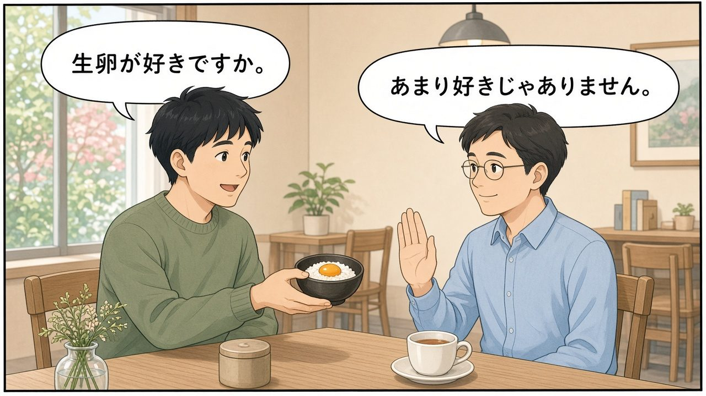

10/29 第5課「今度の休みに」ST3
今天辛苦了！一句話重點：想要東西用 〜が欲しいです；想做動作用 ます形去掉ます＋たいです；溫柔說不太喜歡用 あまり〜じゃありません（比 嫌い 軟）；去某地做某事用 〔場所〕へ〔ます形〕に行きます／来ます／帰ります。特別記：旅行・散歩 本身含「去」的意思 → 旅行に行きます（不要 旅行しに）。
漫畫複習：主角在東京的週末計畫
主角是一位剛搬到東京・神樂坂附近、來語言學校讀書的約 37 歲男性（頁面上只叫「我／主角」，不是任何人的肖像）。每一格對應今天的文法；氣泡裡的字可能糊掉，請看圖下的日語列。
① 神樂坂的早上：這次放假去上野買東西

主角在神樂坂街上打開地圖，決定下次放假去上野逛街買東西。
今度の休みに上野へ買い物に行きます。 | kondo no yasumi ni ueno e kaimono ni ikimasu. | 這次放假要去上野買東西。 | say=こんどのやすみにうえのへかいものにいきます。
生活中怎麼用：〔場所〕へ〔活動〕に行きます＝去某地做某事。EN: go to Ueno to shop. 泰：ไปอูเอโนะเพื่อไปช้อป。
② 腳踏車店：想要腳踏車／想借腳踏車

走進腳踏車店，指著一台車：想要一台；也想先借來騎騎看。
自転車がほしいです。 | jitensha ga hoshii desu. | 我想要腳踏車。 | say=じてんしゃがほしいです。
自転車を借りたいです。 | jitensha o karitai desu. | 我想借腳踏車。 | say=じてんしゃをかりたいです。
生活中怎麼用：名詞＋が欲しい（อยากได้）；動作＋たい（อยาก…）。借＝借りる／貸す（對方借給你）。
③ 書桌前發呆：好想去箱根泡溫泉

看著箱根旅遊手冊，心裡已經在露天溫泉裡了。
箱根へ温泉に入りに行きたいです。 | hakone e onsen ni hairi ni ikitai desu. | 我想去箱根泡溫泉。 | say=はこねへおんせんにはいりにいきたいです。
箱根へ行きたいです。 | hakone e ikitai desu. | 我想去箱根。
生活中怎麼用：行きたい＝want to go／อยากไป；入りに行きたい＝go in order to enter the bath。
④ 神樂坂散步：散歩に行きます（不是 しに）

秋葉石階巷子慢慢走，不用說「散歩しに」——散步本身就是「去」。
神楽坂へ散歩に行きます。 | kagurazaka e sanpo ni ikimasu. | 去神樂坂散步。 | say=かぐらざかへさんぽにいきます。
生活中怎麼用：旅行・散歩 → ○旅行に行きます／○散歩に行きます。✗旅行しに行きます。
⑤ 超市買蛋：日本生蛋好新鮮

課堂上老師聊到日本生蛋很新鮮可以生吃；主角去超市買蛋。
日本の卵は新鮮ですね。 | nihon no tamago wa shinsen desu ne. | 日本的雞蛋好新鮮啊。 | say=にほんのたまごはしんせんですね。
卵を買いに行きます。 | tamago o kai ni ikimasu. | 去買雞蛋。 | say=たまごをかいにいきます。
生活中怎麼用：買いに行きます＝go to buy。課堂 tangent：日本の生卵は新鮮（可以生吃的衛生標準）。
⑥ 咖啡店婉拒：あまり好きじゃありません

同學問喜不喜歡生蛋拌飯；主角用比較軟、有禮貌的說法婉拒。
生卵が好きですか。 | namatamago ga suki desuka. | 你喜歡生蛋嗎？ | sp=同學;say=なまたまごがすきですか。
あまり好きじゃありません。 | amari suki ja arimasen. | 不太喜歡。 | sp=我
生活中怎麼用：嫌いです 比較直接／刺耳；あまり好きじゃありません 比較軟、禮貌（EN: I don't really like it／泰: ไม่ค่อยชอบ）。
今天的漢字：林・森・森林・畑
老師講寫法平衡、訓讀／音讀，以及「畑」是國字（日本自造字，沒有音讀）。
| 漢字 | 訓讀 | 音讀 | 備註 |
|---|
| 林 | はやし | りん | 兩棵木＝樹林（比森少） |
| 森 | もり | しん | 三棵木＝森林（比林密） |
| 森林 | — | しんりん | 音＋音：しん＋りん |
| 畑 | はたけ | （無） | 國字：火＋田；燒畑農業；無音讀 |
林があります。 | hayashi ga arimasu. | 有一片樹林。 | say=はやしがあります。
森へ散歩に行きます。 | mori e sanpo ni ikimasu. | 去森林散步。 | say=もりへさんぽにいきます。
森林がきれいです。 | shinrin ga kirei desu. | 森林很漂亮。 | say=しんりんがきれいです。
畑で野菜を作ります。 | hatake de yasai o tsukurimasu. | 在田裡種菜。 | say=はたけでやさいをつくります。
記法
- 粵林 hayashi ←「下衣士」兩木；森 mori ←「摩利」三木更密。
- 普森林 shinrin ← 音讀拼起來（しん＋りん）；畑 hatake ←「火田」＝燒墾的田。
- EN林＝woods；森＝forest（more trees）；畑＝field（fire+rice field）。
- 泰林／森＝ป่า；畑＝ทุ่งนา／ไร่；無音讀＝ไม่มี on'yomi。
時間詞：今晚・今年・來年・這次放假
時間詞通常不加助詞，放在句子前面。例：今晩、レストランへ行きます。今度＝這一次／下一次（不是「來年」）。
こんばん | 今晚 | konban | 今晚 | 不加助詞
ことし | 今年 | kotoshi | 今年
らいねん | 來年 | rainen | 明年
こんど | 今度 | kondo | 這次／下次
こんどのやすみ | 今度の休み | kondo no yasumi | 這次放假
しゅうまつ | 週末 | shuumatsu | 週末
なつやすみ | 夏休み | natsuyasumi | 暑假
はるやすみ | 春休み | haruyasumi | 春假
今晩、うちでゲームをします。 | konban, uchi de ge-mu o shimasu. | 今晚在家打遊戲。 | say=こんばん、うちでゲームをします。
今年の夏休み、北海道へ行きたいです。 | kotoshi no natsuyasumi, hokkaidou e ikitai desu. | 今年暑假想去北海道。 | say=ことしのなつやすみ、ほっかいどうへいきたいです。
来年の春休み、旅行に行きます。 | rainen no haruyasumi, ryokou ni ikimasu. | 明年春假去旅行。 | say=らいねんのはるやすみ、りょこうにいきます。
今度の休みに何をしますか。 | kondo no yasumi ni nani o shimasuka. | 這次放假做什麼？ | say=こんどのやすみになにをしますか。
今天的單字
しゃしん | 写真 | shashin | 照片 | しゃ＋しん
じてんしゃ | 自転車 | jitensha | 腳踏車 | じてんしゃ
かりる | 借りる | kariru | 借入（我向人借） | かります
かす | 貸す | kasu | 借出（我借給人） | かします
ほしい | 欲しい | hoshii | 想要（名詞） | い形容詞
すき | 好き（な） | suki | 喜歡 | な形容詞；對象用 が
きらい | 嫌い（な） | kirai | 討厭 | 比較直接
あまり | あまり | amari | 不太（＋否定）
たい | 〜たい | tai | 想要做… | 接ます形詞幹
かいもの | 買い物 | kaimono | 購物
しょくじ | 食事 | shokuji | 吃飯／餐
りょこう | 旅行 | ryokou | 旅行
さんぽ | 散歩 | sanpo | 散步
おんせん | 温泉 | onsen | 溫泉
びじゅつかん | 美術館 | bijutsukan | 美術館
ほんや | 本屋 | honya | 書店
うえの | 上野 | ueno | 上野
しぶや | 渋谷 | shibuya | 澀谷
はこね | 箱根 | hakone | 箱根
たまご | 卵 | tamago | 蛋
なまたまご | 生卵 | namatamago | 生蛋
記法
- 粵欲しい hoshii ←「好想要 ho 死」；借りる ←「卡利入」；貸す ←「卡蘇出」。
- 普自転車 ←「自轉車」；写真 ←「寫真＝照片」。
- ENたい ≈ want to；ほしい ≈ want (a thing)；借りる borrow／貸す lend。
- 泰たい ≈ อยาก；ほしい ≈ อยากได้；あまり〜じゃありません ≈ ไม่ค่อย…。
〜が欲しいです（想要東西）
名詞＋が欲しいです。否定：〜は欲しくないです。EN: I want + noun. 泰: อยากได้ + สิ่งของ。
パソコンがほしいです。 | pasokon ga hoshii desu. | 我想要電腦。 | say=パソコンがほしいです。
自転車がほしいです。 | jitensha ga hoshii desu. | 我想要腳踏車。
大きいかばんがほしいです。 | ookii kaban ga hoshii desu. | 我想要一個大包包。 | say=おおきいかばんがほしいです。
新しい財布がほしいです。 | atarashii saifu ga hoshii desu. | 我想要新錢包。 | say=あたらしいさいふがほしいです。
何もほしくないです。 | nani mo hoshiku nai desu. | 什麼都不想要。
自転車がほしいですから、お店へ行きます。 | jitensha ga hoshii desu kara, omise e ikimasu. | 因為想要腳踏車，所以去店裡。 | say=じてんしゃがほしいですから、おみせへいきます。
課本例：今度の休みに何をしますか。→ パソコンがほしいですから、サカイ電器へ行きます。
〜が好きです／あまり〜じゃありません
喜歡的對象用 が。な形容詞否定跟名詞一樣：〜じゃありません。直接說 嫌い 比較刺耳 → 禮貌版 あまり好きじゃありません。
買い物が好きですか。 | kaimono ga suki desuka. | 你喜歡購物嗎？ | sp=A;say=かいものがすきですか。
はい、好きです。 | hai, suki desu. | 是，喜歡。 | sp=B
生卵が好きですか。 | namatamago ga suki desuka. | 你喜歡生蛋嗎？ | sp=A;say=なまたまごがすきですか。
あまり好きじゃありません。 | amari suki ja arimasen. | 不太喜歡。 | sp=B
ビールがあまり好きじゃありません。 | bi-ru ga amari suki ja arimasen. | 不太喜歡啤酒。 | say=ビールがあまりすきじゃありません。
い形容詞否定不是 じゃありません（例：広い → 広くないです）。好き／嫌い／便利 等是 な。
〜たいです（想做某事）
動詞ます形 → 去掉「ます」→ 加 たいです。EN: want to + verb. 泰: อยาก + กริยา。
| ます形 | たい形 | 意思 |
|---|
| 行きます | 行きたいです | 想去 |
| 登ります | 登りたいです | 想爬（山） |
| 会います | 会いたいです | 想見面 |
| 飲みます | 飲みたいです | 想喝 |
| します | したいです | 想做 |
| 撮ります | 撮りたいです | 想拍（照） |
富士山に登りたいです。 | fujisan ni noboritai desu. | 我想爬富士山。 | say=ふじさんにのぼりたいです。
北海道へ行きたいです。 | hokkaidou e ikitai desu. | 我想去北海道。 | say=ほっかいどうへいきたいです。
国の友達に会いたいです。 | kuni no tomodachi ni aitai desu. | 我想見故鄉的朋友。 | say=くにのともだちにあいたいです。
お茶を飲みたいです。 | ocha o nomitai desu. | 我想喝茶。
スキーをしたいです。 | suki- o shitai desu. | 我想滑雪。 | say=スキーをしたいです。
きれいな景色の写真を撮りたいです。 | kirei na keshiki no shashin o toritai desu. | 我想拍漂亮風景的照片。 | say=きれいなけしきのしゃしんをとりたいです。
私も買い物をしたいです。 | watashi mo kaimono o shitai desu. | 我也想購物。 | say=わたしもかいものをしたいです。
ほしい＝想要「東西」；たい＝想要「做動作」。自転車がほしいです／借りたいです。
〔場所〕へ〔ます形〕に行きます／来ます／帰ります
去／來／回去某地，目的用：ます形去掉ます＋に＋行きます／来ます／帰ります。EN: go to PLACE to do X. 泰: ไปที่…เพื่อ…。
山へ写真を撮りに行きます。 | yama e shashin o tori ni ikimasu. | 去山上拍照。 | say=やまへしゃしんをとりにいきます。
上野へ美術館を見に行きます。 | ueno e bijutsukan o mi ni ikimasu. | 去上野看美術館。 | say=うえのへびじゅつかんをみにいきます。
渋谷へ食事しに行きます。 | shibuya e shokuji shi ni ikimasu. | 去澀谷吃飯。 | say=しぶやへしょくじしにいきます。
箱根へ温泉に入りに行きます。 | hakone e onsen ni hairi ni ikimasu. | 去箱根泡溫泉。 | say=はこねへおんせんにはいりにいきます。
本屋へ本を借りに行きます。 | honya e hon o kari ni ikimasu. | 去書店借書。 | say=ほんやへほんをかりにいきます。
図書館へ本を借りに行きます。 | toshokan e hon o kari ni ikimasu. | 去圖書館借書。 | say=としょかんへほんをかりにいきます。
デパートへかばんを買いに行きます。 | depa-to e kaban o kai ni ikimasu. | 去百貨公司買包包。 | say=デパートへかばんをかいにいきます。
日本へ日本語を勉強しに来ました。 | nihon e nihongo o benkyou shi ni kimashita. | 來日本學日語。 | say=にほんへにほんごをべんきょうしにきました。
家族に会いに帰ります。 | kazoku ni ai ni kaerimasu. | 回去見家人。 | say=かぞくにあいにかえります。
名詞に行きます vs 〜しに行きます
- 食事・買い物等：両方可 → 食事に行きます／食事しに行きます（意思相同）。
- 旅行・散歩：詞本身含「移動」→ 只用 旅行に行きます／散歩に行きます（✗旅行しに）。
| ○ 正確 | △／✗ | 說明 |
|---|
| 食事に行きます | 食事しに行きます（也可） | 名詞／サ變皆可 |
| 買い物に行きます | 買い物しに行きます（也可） | 同上 |
| 旅行に行きます | ✗ 旅行しに行きます | 本身是移動 |
| 散歩に行きます | ✗ 散歩しに行きます | 本身是移動 |
公園へ散歩に行きます。 | kouen e sanpo ni ikimasu. | 去公園散步。 | say=こうえんへさんぽにいきます。
京都へ旅行に行きます。 | kyouto e ryokou ni ikimasu. | 去京都旅行。 | say=きょうとへりょこうにいきます。
コンビニへお弁当を買いに行きます。 | konbini e obentou o kai ni ikimasu. | 去便利商店買便當。 | say=コンビニへおべんとうをかいにいきます。
友達の家へ食事を作りに行きます。 | tomodachi no uchi e shokuji o tsukuri ni ikimasu. | 去朋友家做飯。 | say=ともだちのうちへしょくじをつくりにいきます。
課本對話 by 角色（p.80／p.83）
角色用 A／B（不寫同學真名）。重打課本內容，不放課本照片。
言ってみよう① ほしい＋へ行きます
今度の休みに何をしますか。 | kondo no yasumi ni nani o shimasuka. | 這次放假做什麼？ | sp=A;say=こんどのやすみになにをしますか。
パソコンがほしいですから、サカイ電器へ行きます。 | pasokon ga hoshii desu kara, sakai denki e ikimasu. | 因為想要電腦，所以去酒井電器。 | sp=B;say=パソコンがほしいですから、サカイでんきへいきます。
そうですか。 | sou desuka. | 這樣啊。 | sp=A
替換：自転車・ニコニコショッピングビル／大きいかばん・デパート／携帯電話・秋葉原／新しい財布・新宿。
言ってみよう② 好き＋たい
買い物が好きですか。 | kaimono ga suki desuka. | 你喜歡購物嗎？ | sp=A;say=かいものがすきですか。
はい、好きです。日曜日、新宿で買い物をします。 | hai, suki desu. nichiyoubi, shinjuku de kaimono o shimasu. | 喜歡。星期天在新宿購物。 | sp=B;say=はい、すきです。にちようび、しんじゅくでかいものをします。
へえ、いいですね。私も買い物をしたいです。 | hee, ii desu ne. watashi mo kaimono o shitai desu. | 喔，真好。我也想購物。 | sp=A;say=へえ、いいですね。わたしもかいものをしたいです。
時間・場所替換：今晩・うち／週末・渋谷／今年の夏休み／来年の春休み。
やってみよう 例4（場所へ〜に行きます）
今度の休みにどこかへ行きますか。 | kondo no yasumi ni dokoka e ikimasuka. | 這次放假有要去哪嗎？ | sp=A;say=こんどのやすみにどこかへいきますか。
はい、山へ写真を撮りに行きます。 | hai, yama e shashin o tori ni ikimasu. | 有，去山上拍照。 | sp=B;say=はい、やまへしゃしんをとりにいきます。
上野へ美術館を見に行きます。 | ueno e bijutsukan o mi ni ikimasu. | 去上野看美術館。 | say=うえのへびじゅつかんをみにいきます。
渋谷へ食事しに行きます。 | shibuya e shokuji shi ni ikimasu. | 去澀谷吃飯。 | say=しぶやへしょくじしにいきます。
箱根へ温泉に入りに行きます。 | hakone e onsen ni hairi ni ikimasu. | 去箱根泡溫泉。 | say=はこねへおんせんにはいりにいきます。
本屋へ本を借りに行きます。 | honya e hon o kari ni ikimasu. | 去書店借書。 | say=ほんやへほんをかりにいきます。
聽力摘要（課本約 p.97）
聽兩個人的放假計畫（課堂填答；這裡只整理聽到的內容，不是作業答案卷）。
| 人 | 計畫 |
|---|
| アンナ | 打算買腳踏車；聽說別人在ハッピー・スーパー 15,000 円買到，自己也決定去那裡買。 |
| まるこ | 放假和朋友去長野爬山；還沒爬過富士山，明年夏天想爬。 |
自転車を買います。 | jitensha o kaimasu. | 要買腳踏車。 | say=じてんしゃをかいます。
長野へ山登りに行きます。 | nagano e yamanobori ni ikimasu. | 去長野爬山。 | say=ながのへやまのぼりにいきます。
来年の夏、富士山に登りたいです。 | rainen no natsu, fujisan ni noboritai desu. | 明年夏天想爬富士山。 | say=らいねんのなつ、ふじさんにのぼりたいです。
易錯點：課堂上真的出現過
✗ 旅行しに行きます✓ 旅行に行きますryokou ni ikimasu
旅行本身含移動
✗ 散歩しに行きます✓ 散歩に行きますsanpo ni ikimasu
同上
✗ 自転車をほしいです✓ 自転車がほしいですjitensha ga hoshii desu
對象用 が
✗ 好きを行きます✓ 食べに行きます／買い物に行きますtabe ni ikimasu
に行きます前要名詞或ます詞幹
✗ 友達を会いに行きます✓ 友達に会いに行きますtomodachi ni ai ni ikimasu
会う的對象用 に
✗ 嫌いです（太直接）✓ あまり好きじゃありませんamari suki ja arimasen
更軟、更禮貌
✗ 今度＝来年✓ 今度＝這一次／下一次kondo
來年是 らいねん
✗ 広いじゃありません✓ 広くないですhiroku nai desu
い形容詞否定
我自己的句子（只給句框，請自己填）
老師禁止用 AI 代寫作文。下面只給格式，請依自己的真實計畫填空。
- 今度の休みに、＿＿へ＿＿に行きます。
- ＿＿がほしいです。ですから、＿＿へ行きます。
- ＿＿たいです。（動詞ます形→たい）
- ＿＿があまり好きじゃありません。
- 神楽坂へ＿＿に行きます。
- 箱根／上野／渋谷 選一個：＿＿へ＿＿に行きたいです。
總考試 20 題（三條命）
有 🔊 的是聽力題。三條命用完就結束，最後列出錯題，可以一鍵複製。
今天的重點・作業・15 分鐘
📌 今天的重點
- 漢字：林（はやし／りん）・森（もり／しん）・森林・畑（はたけ・國字・無音讀）。
- 〜が欲しいです／〜たいです；ほしい＝東西，たい＝動作。
- あまり〜じゃありません（比 嫌い 軟）。
- 〔場所〕へ〔ます形〕に行きます／来ます／帰ります。
- 旅行・散歩 → 旅行に／散歩に（不要 しに）。
⏰ 作業和明天的小考
- 錄音結束句：「今日はこれで終わりです」（約 02:49）。
- 沒聽到明確的宿題／小テスト宣布（10/30）。
- 課堂上做過：文法ノート p.30–31、教科書約 p.80–83／96–97、別冊約 p.20。
- 建議自習：ほしい／たい 轉換、へ〜に行きます、旅行に vs しに。
- 若黑板有佈置，請對同學確認後再補。
⏱ 15 分鐘複習法
- 0–5 分：關掉拼音，念漢字四字＋ほしい／たい 各 3 句。
- 5–10 分：🎧 跟讀漫畫台詞＋課本對話。
- 10–15 分：玩 ①ます→たい、③ほしい vs たい、④旅行に；再說自己的放假計畫 3 句。